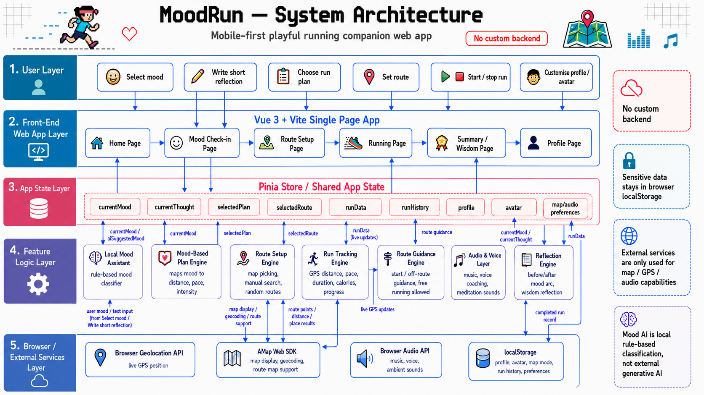

System Architecture

MoodRun handles data mainly inside the browser. User inputs such as mood selection,
short reflections, selected run plans, route choices, profile details, avatar settings,
and run records are first stored in the Pinia shared app state so different Vue pages
and feature engines can update and reuse them in real time. Data that needs to remain
after closing the app, such as profile information, avatar, preferences, map mode, and
run history, is saved in browser localStorage. Mood analysis is processed
locally through a rule-based classifier, and there is no custom backend or external
generative AI. External services are only used for browser-supported functions such as
GPS location, map display/geocoding through AMap, and audio playback, while sensitive
user data stays on the user's device.